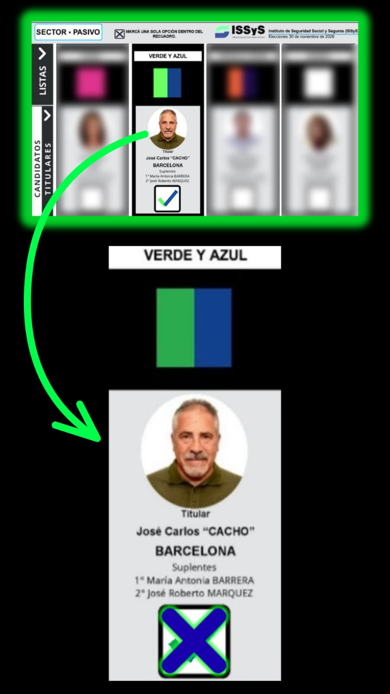

Tu jubilación, tu obra social y tus derechos merecen tu compromiso.
Tu indiferencia no frena las decisiones. Tu participación puede cambiar quién las toma.
*históricamente en promedio sólo el 10% del padrón elige el futuro de todos

Nuestra boleta

SE EL PROTAGONISTA DE ESTA HISTORIA El Lunes 30 de Noviembre, acompañanos con TU VOTO!
Falta muy poco para las elecciones
Apertura de urnas: Lunes 30 de Noviembre de 2026 a las 09:00 hs (Chubut Argentina)
¡Hoy es el día de elegir Verde y Azul! 🗳️
Las mesas ya se encuentran habilitadas desde las 09:00 hs.

Somos más que 3 representantes por boleta, somos un equipo que en los próximos 2 años vamos a estar presentes con cada afiliado! ¡Apoyanos con tu voto!

Daniel Terraza (Vocal por los Activos) y José Barcelona (Vocal por los Pasivos). La mejor dupla para representar a cada afiliado del ISSyS.
Compartí con todos tus amigos y familiares, La lista Verde y Azul es el equipo de trabajo para TODOS
Ver ActivosPreguntas Frecuentes
Seleccioná cada consulta para ver toda la información oficial